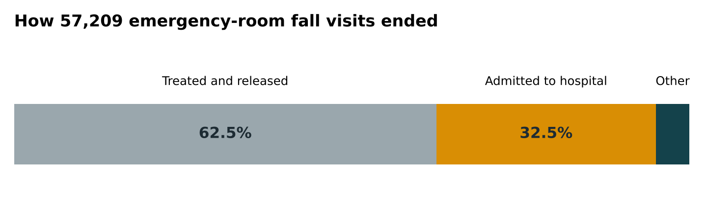
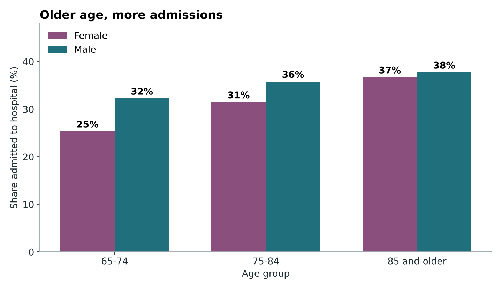
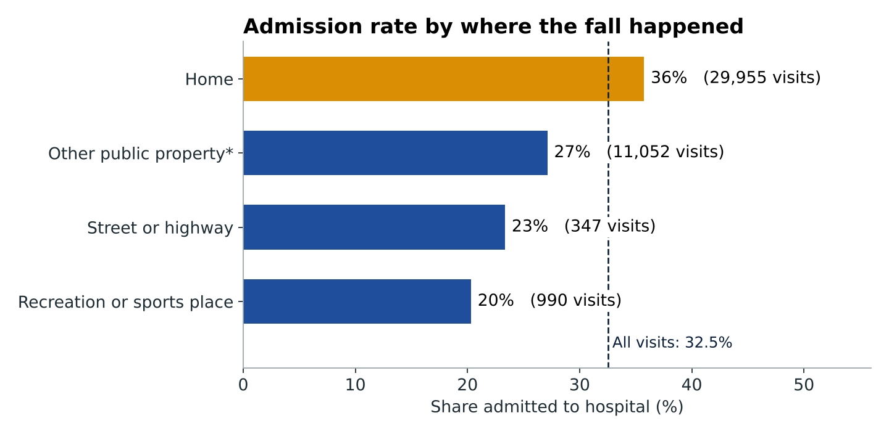
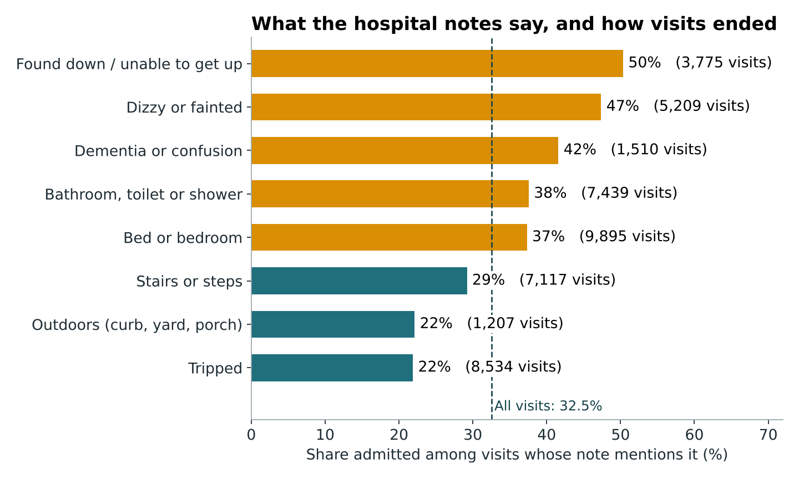
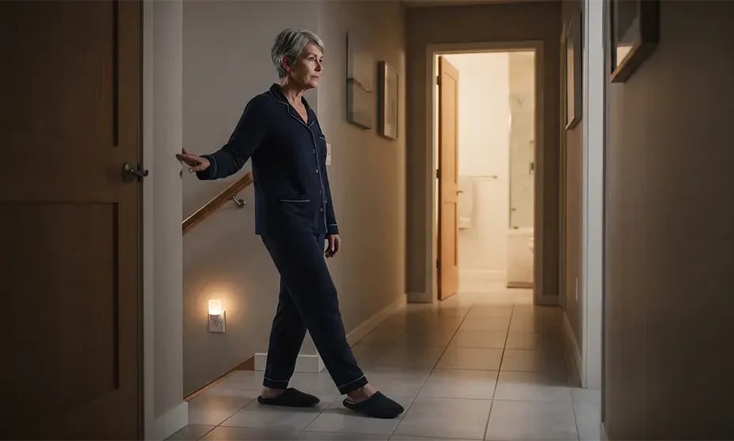

Overview
Behind every number in this project is a real person, and often a family who was worried about them.
Most of us know someone who has fallen: a grandparent on the stairs, a neighbor in the bathroom late at night, a parent who was found on the floor hours later. For an older adult, a fall can mean much more than a bruise. It can mean a hospital stay, a long recovery, and a lasting loss of confidence and independence. For the people who love and care for them, it often means worry, and hard decisions about how to help.
I wanted to understand what emergency-room records can tell us about these moments. The goal is not to place blame on anyone who has fallen. It is to learn which situations are most often followed by a hospital stay, so that families, caregivers, and the home-safety and community-health teams who support older adults have a better sense of where to look first.
These records come from real visits, but they cannot tell the whole story of any one person's life. I tried to keep that in mind throughout, and I explain what the data can and cannot say along the way.
Main question
Among older adults treated in an emergency room (ER) after a fall, which circumstances go along with being admitted to the hospital instead of treated and sent home?
Who this is for
Families and caregivers, and the home-safety and community-health teams who support older adults. They know the topic well, but may be less at ease with statistics, so I explain everything in plain words.
What I expected, and what happened
I expected stairs and bathrooms to be the most dangerous places. The bathroom part held up. The stairs part did not: falls where the hospital note mentioned stairs ended in admission less often than average. The highest admission rates were tied to medical situations, such as dizziness or being found on the floor.
Where the data comes from
Real, anonymous hospital records, not a survey.
| Source | U.S. Consumer Product Safety Commission, National Electronic Injury Surveillance System (NEISS), 2024 annual data. |
|---|---|
| How it was collected | A national sample of hospital emergency departments. Staff record each injury visit: age, sex, where it happened, how the visit ended, and a short written note about what happened. |
| What I kept | Visits from January to December 2024 by adults 65 and older whose note describes a fall, with a known outcome: 57,209 visits, out of 361,672 records in the file. |
| One row is | One ER visit for one injury (not one person across the year). |
| Written notes | Each visit has a short note, for example "fell while walking to the bathroom." I read a random sample of 60 and searched all of them for common situations. |
Limits to keep in mind
- Only people who reached an ER are included. Falls without an ER visit are missing, so this cannot say how often older adults fall.
- "Admitted" can reflect an illness found during the visit, not how bad the fall injury was.
- Notes are short. I found situations by searching for keywords, which is imperfect.
- Percentages are sample percentages, not national totals. Using the data's sampling weights lowers the overall share from 32.5% to 29.7%, but the ordering of the groups stays the same.
Findings
Here are six identifiable patterns across these ER visits and the data that supports them.

- Admission rises with age. 28% of visits at ages 65–74, 33% at 75–84, and 37% at 85 and older.
- Medical situations stand out. When the note describes being found on the floor or unable to get up, 50% ended in admission. For dizziness or fainting it was 47%, and for dementia or confusion 42%.
- Bedroom and bathroom falls were admitted more often (about 37%) than other falls (about 32%).
- Stairs were not the top risk. Notes mentioning stairs or steps were admitted 29% of the time, below the 32.5% average. This does not mean stairs are safe. It only describes people who came to the ER.
- Falls at home were admitted more often (36%) than falls on other public property (27%), in the street (23%), or at recreation sites (20%).
- Few notes mention darkness (0.2%) or night-time (1.9%). The data cannot say whether lighting matters, which is why I propose testing it below.
The charts behind these findings



In their own words
A few shortened hospital notes, with their public case numbers. They show why the numbers look the way they do.
"Fell while he was walking to the bathroom."Case 241160357 · admitted
"Fell on the floor & was unable to get up. Down overnight til found."Case 250260398 · admitted
"Tripped on his pants, fell backwards striking his head."Case 240434687 · treated and released
Some notes complicate the story. A few people were admitted for an illness found during the visit (for example, heart failure after a fall in the shower), not for the fall injury itself. And some serious-sounding falls, like one over a flight of stairs with a broken arm, ended with the person going home.
Explore it yourself
Pick an age range and where the fall happened. The dashboard shows how ER fall visits like that ended, and how many visits it is based on.
Walkthrough video
A short screen recording of my questions, findings, and how to use the dashboard.
Next Steps: What I would test
The data describes who ends up in the hospital. It cannot say what would help. A well-designed experiment could.
The bed and bathroom finding suggests a simple idea: light the way from bed to bathroom. The records cannot show whether that helps (very few notes mention lighting), so I designed a study to find out. I have not run it. This is a proposal.
The aim is a small, kind change that families could make at home, tested carefully before anyone is asked to rely on it.

Households get the program's standard fall-prevention handout, delivered in a visit or call of similar length.
The same handout, plus motion-activated night lights along the path from bed to bathroom.
- Prediction: adding night lights along that path will lead to fewer households reporting a fall over 12 weeks, because people can see hazards when they get up in the dark.
- Who: adults 65+ living in their own homes who get up at night. Households are assigned by a random draw, at the same time, and stay in their version.
- Main measure: the share of households reporting at least one fall during 12 weeks. Every household gets the full 12 weeks.
- Watch for problems: lights unplugged, sleep disruption, new tripping hazards from cords.
- What it would not show: even a win would not prove fewer hospital admissions. That would need a longer study.
AI Analysis
I asked Microsoft Copilot to critique my findings and my test, then checked its claims against the data.
Where the AI was right
It agreed that these are associations, not causes, that lighting is rarely documented, and that falls are rare enough in any one household that the test needs many participants.
Where the data disagreed
Copilot guessed that men were admitted more because of more serious injuries. In the data, women had more fractures. It also described "public property" as active, mobile older adults, but about half of that group are care-facility falls.
Checking also changed my own work: I corrected how I describe the "other public property" group, and removed a claim about night-time falls that the data did not support. The notebook documents each check.
Files and sources
| Analysis notebook | Open the Colab notebook. It holds data cleaning, charts, text analysis, the A/B proposal, and the AI comparison. |
|---|---|
| Dashboard code | GitHub repository (Streamlit and Plotly), with run instructions and a field guide. |
| Data | Cleaned file of 57,209 visits, plus the raw 2024 file from the CPSC NEISS page. |
| Built with | Python, pandas, matplotlib, Streamlit, Plotly. AI tools (Claude and Microsoft Copilot) helped with code, drafting, and critique; they are credited in the notebook. |